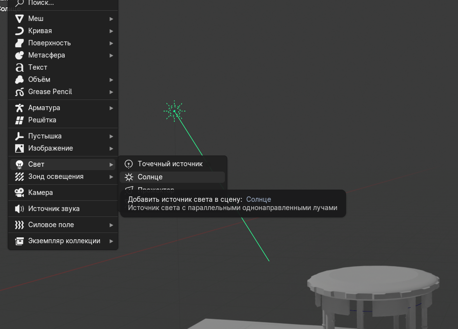
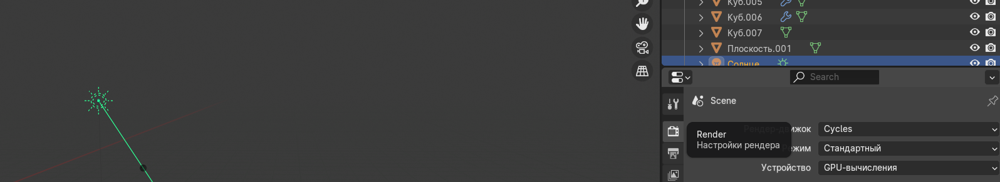

Хороший свет «продаёт» камень и воду сильнее, чем усложнение геометрии.
Шаги на сегодня
- Добавьте солнце:
Shift + A→Свет→ Солнце (см. скрин 111). Один раз достаточно — если солнце уже есть, просто выделите его в аутлайнере. - Поверните солнце (
Rили манипулятор вращения): лучи идут «из иконки» наружу — направьте их так, чтобы тени от башни читались сбоку, а фасад был освещён. - Во вкладке свойств лампы (иконка лампочки) подберите силу для выбранного движка (Cycles часто 3–10 W в зависимости от сцены; смотрите превью в режиме Rendered).
- Откройте Render Properties (иконка фотоаппарата): выберите Cycles и при наличии видеокарты — GPU-вычисления (скрин 222). Так финальный кадр считается быстрее, чем только на процессоре.
- Вкладка World: цвет неба или HDRI для отражений на воде.
- При тёмных тенях под колоннами добавьте второй свет — мягкий
Areaспереди с меньшей силой. - Переключите затенение вьюпорта на Rendered (крайняя иконка-шар справа вверху) и проверьте воду и силуэт башни.
- Сохраните
lesson05_light.blend.
Скрины: солнце и настройка рендера

Shift + A → Свет → Солнце.
Горячие клавиши этого дня
Shift + A— меню добавления (свет, камера и др.).R— поворот выделенного солнца (до фиксации кликом или второй разRдля ввода угла).